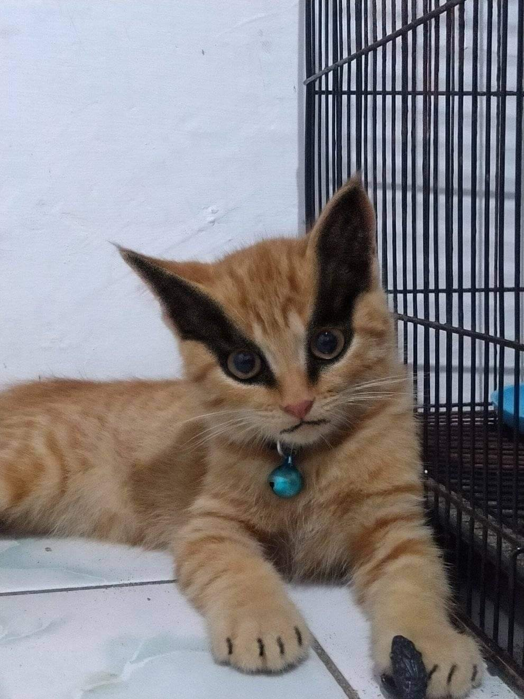
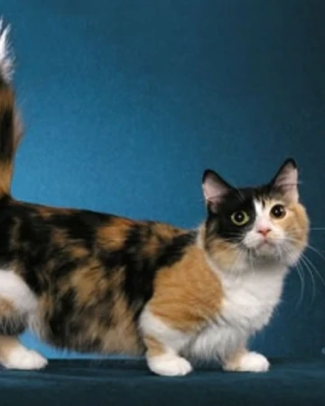

Edad: 2 años.
Raza:Persa
Desc.: Amigable y hogareño.
|  | Nombre: Kurama Edad: 5 años. Raza: gato exotico. Desc.: Es un poco timido pero con el tiempo ya veras que sera un gato jugeton y tambien muy dormilon. |
|  | Nombre: Rusio Edad: 3 año. Raza: munchkin. Desc.: Es muy limpio y entiende todo a la primera. |
| |
Nombre: Cachupin Edad: 2 años. Raza:Persa Desc.: Amigable y hogareño. |